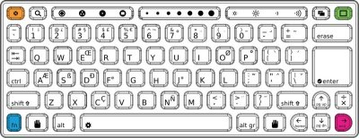

Repairs
Your XO is built and designed for repair work to be completed with only your hands and a screwdriver, and the case includes extra screws in case you need them.
For photos and step-by-step instructions on repairing your XO or putting replacement parts in, go to http://wiki.laptop.org/go/Repair.
Refer to http://wiki.laptop.org/go/Repair_center_locations to get to the most recent directory of repair centers, if you do not want to repair your XO yourself.
Recalibrating the touchpad
The XO touchpad does not offer a click mechanism like some touchpads. You must click the long button marked with an X to select something on the screen. Sometimes the touchpad seems to behave erratically or makes the cursor jump on the screen.
If the pointer is not following your finger on the touchpad, or if it jumps to the corners when you touch the touchpad, please try this recalibration procedure:
Hold down the three keys at one time: the upper left, upper right, and lower right of the keyboard and the fourth key, fn, the lower leftmost key, as the last one pressed, and then release them all.

If this doesn't help, try shutting down the laptop and removing the battery for ten seconds before restarting.
Finally, plug a standard USB mouse into your laptop to bypass the problem.
Checking for keys that stay down or appear stuck
Your XO must have a developer's key to do this keyboard test. Refer to http://wiki.laptop.org for more information about developer's keys.
- Hold down the checkmark key while pushing the power button.
- After starting up, press the escape key in the upper left hand corner of the keyboard layout (a circle with an x).
- At the ok prompt, type:
test keyboard
and press enter.
A blue keyboard map displays on the screen. Press keys one at a time to see the keyboard map turn the key light blue. If the display on screen shows a light blue key constantly, the keyboard has a problem with that particular key sticking. Refer to a repair center for full diagnosis and repair at http://wiki.laptop.org/go/Repair_center_locations.
Repairing damage to the keyboard
If your keyboard becomes damaged, normally it has to be replaced. Replacements are available through the repair centers. Information on spare parts and repair centers can be found at http://wiki.laptop.org/go/Repair_center_locations.
Restoring the software to factory defaults
If you want to completely wipe clean the XO, you may can try upgrading the activated laptop to re-flash its entire "disk image" including both its operating system and its Activities. Refer to Resetting your XO for detailed instructions. Please be aware that ALL DATA WILL BE LOST.
Troubleshooting the internal XO hardware
The XO can give you information about possible repairs that are needed.
Start by pressing the power button for a second, and then answer the following questions.
Does the Power LED half-circle light up?
When the power button is pressed once, and the power LED doesn't turn on, first try resetting it.
To reset the XO, remove all power sources from the laptop:
- Take the battery out and remove the power adapter.
- Wait two minutes. This allows embedded hardware to lose all power and reset itself.
- Replace at least one source of power, either the battery or power adapter, and watch the power/battery LED while you do so.
The battery LED should flash orange momentarily (about a quarter of a second) when power is first reapplied. If you do not see this flash, you either have a motherboard hardware problem or faulty EC firmware installed. Contact a repair center for assistance.
If the power LED doesn't turn on or flash, but the laptop proceeds to illuminate the backlight and even start, the problem may be either the LEDs themselves or the power LED driver. The LEDs are in series, so if one fails they may both fail to light.
On rare occasions, the power button becomes stuck mechanically. In this case, the laptop does not detect the depression of the power button, and does not turn on. Ensure that the power button is moving freely by pressing it a few times.
If the battery LED flashed on restoration of power and the power button isn't stuck, and no other signs of life are detected, then you can't determine the reason for failure. Contact a repair center for assistance.
Does the display light up?
After starting the XO and viewing the power LED, the next visible feedback from the XO is that the display lights up. The LCD display should be initialized with white, then begin to show text or graphics. The backlight for the screen should be turned on, even if the backlight was previously turned off.
If this does not happen then the boot sequence may not be operating correctly. Next, look at the Microphone activity LED to see if it is lit. If the power LED and the microphone LED are both lit then a serious boot error has occurred and you should contact a repair center for assistance.
Can you hear the startup sound when the XO starts?
If the startup sound does not play, this usually indicates a problem that a repair center needs to fix.
Yes, the startup sound plays
If the display doesn't initialize, but the boot sound plays, then this is probably a problem with the display.
No, the XO boots normally, but no boot sound plays
If no boot sound is played, but the machine boots normally and has audio, it is possible that the default boot volume to has been changed to 0. While the boot sound is playing, you can adjust the volume using the volume adjust keys. This modified volume setting is saved and used for future boots. Try increasing the volume right after starting the laptop a few times, and see if the boot sound returns.
If no boot sound is played, and the machine boots normally but has no audio see http://wiki.laptop.org/go/XO_Troubleshooting_AV.
Does the display remains blank after starting up?
Sometimes the display is active (including backlight), but no text or graphics appear. This problem can be caused by removing the power to an XO while it is upgrading the firmware. You should contact a repair center for assistance.
Does the display say "Connect power to proceed"?
Sometimes a firmware update required two sources of power, both a battery and a power adapter. If this is the problem, provide both sources of power and reboot. The XO should proceed with a firmware update and boot normally.Is the display is showing an XO icon only?
This means that the XO has started the startup process.
You can see much more information about your Open Firmware by holding the '✓' (check) button (above the power button) after powering on. That will make Open Firmware display more detailed messages about what it is doing during the secure boot process (including early boot messages from the Linux kernel). The messages are in English only.
Is it showing an XO icon with a serial number and three icons below it?
If the laptop powers up, but stops when displaying the XO icon in the middle of the screen, followed by a serial number (e.g. CSN74902B22) and three icons (SD disk, USB disk, Network signal strength), it is looking for its activation lease. This should eventually print "Activation lease not found" at the top of the screen and power-off soon thereafter.
The solution is to re-activate the laptop. Obtain a copy of the lease (or a new lease) from your country activation manager, place it (named "lease.sig") in the top-level directory of a USB key and boot the laptop. See the "what to do with activation keys" section within: http://wiki.laptop.org/go/Activation_and_Developer_Keys
Is it showing an XO icon with a "sad face" above it?
This means that Open Firmware couldn't find a signed operating system on the internal flash memory. Firmware bootup will also look on USB memory sticks and SD cards for signed operating system software.
Try upgrading of re-installing the software: http://wiki.laptop.org/go/Secure_Upgrade
XO icon with a single dot below it?
If laptops powers up, but stops when just displaying the XO icon in the middle, with a single dot below it, it means that something was wrong when the Linux operating system started. When this happens, try upgrading or reinstalling the XO.
If this has happened to the same XO more than one time, consider a repair center for full diagnosis and repair at http://wiki.laptop.org/go/Repair_center_locations.
Author : Repairing
© adam hyde 2008
Modifications:
Anne Gentle 2008
A Holt 2008
Sandy Culver 2008
License : General Public License